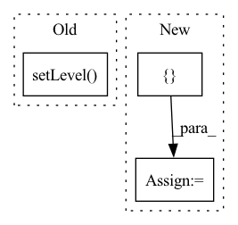

Pattern ID :21677

Before Change
if logger is None:
self.logger = nncore.get_logger()
self.logger.setLevel(log_level)
else:
self.logger = logger
self.flush_states()
After Change
self.work_dir = work_dir
self.logger = nncore.get_logger()
self._hooks = []
self._stage = 0
self._epoch = 0
self._iter = 0
In pattern: SUPERPATTERN
Frequency: 5
Non-data size: 3
Instances
Fragment ID: 69187327
Project Name: yeliudev/nncore
Commit Name: 388797bb64137636c57252b73efa8715ad9e4068
Time: 2020-03-12
Author: goolhanrry@gmail.com
File Name: nncore/engine/engine.py
M Class Name: Engine
N Class Name: Engine
M Method Name: __init__(5)
N Method Name: __init__(5)
M Parent Class: object
N Parent Class: object
M File Name: nncore/engine/engine.py
N File Name: nncore/engine/engine.py
M Start Line: 17
M End Line: 23
N Start Line: 13
N End Line: 23
'>
Before Change
def __init__(self, model_filename="config/emnist_model.pt", num_classes=47, use_cuda=False, debug=False):
if(debug):
logging.getLogger().setLevel(logging.DEBUG)
else:
logging.getLogger().setLevel(logging.INFO)
self._debug = debug
After Change
self.chars = list("1234567890abcdefghijklmnopqrstuvwxyzABCDEFGHIJKLMNOPQRSTUVWXYZ")
self.img_trans = transforms.Compose([
transforms.ToPILImage()
,transforms.Resize((self.img_height, self.img_width))
,transforms.Grayscale(num_output_channels=3)
,transforms.ToTensor()
,lambda x: x < threshold // thresholding (for "<" operator input image should have white background)
,lambda x: x.float()
])
self.device = torch.device("cuda" if torch.cuda.is_available() and use_cuda else "cpu")
'>
Fragment ID: 69187326
Project Name: andreybicalho/vrpdr
Commit Name: daf497818875e24e9502e761bea83e6cbed1f909
Time: 2020-06-17
Author: andreybicalho@gmail.com
File Name: src/ocr.py
M Class Name: OCR
N Class Name: OCR
M Method Name: __init__(5)
N Method Name: __init__(5)
M Parent Class:
N Parent Class:
M File Name: src/ocr.py
N File Name: src/ocr.py
M Start Line: 12
M End Line: 30
N Start Line: 15
N End Line: 39
'>
Before Change
self.time_buf = {}
self.formatter = logging.Formatter("%(asctime)s %(filename)s %(funcName)s [line:%(lineno)d] %(levelname)s %(message)s")
self.head = logging.StreamHandler()
self.head.setLevel(logging.INFO)
self.head.setFormatter(self.formatter)
self.addHandler(self.head)
def check_if_log(self, round, eval_interval=-1):
After Change
self.time_costs = []
self.time_buf = {}
self.formatter = logging.Formatter("%(asctime)s %(filename)s %(funcName)s [line:%(lineno)d] %(levelname)s %(message)s")
self.handler_list = []
if not self.meta["no_log_console"]:
self.streamhandler = logging.StreamHandler()
self.streamhandler.setFormatter(self.formatter)
self.streamhandler.setLevel(self._LEVEL[self.meta["log_level"].upper()])
'>
Fragment ID: 69187333
Project Name: wwzzz/easyfl
Commit Name: 45505e44ba6f50c9df0453fd543b7dfe0891d0e9
Time: 2022-07-29
Author: zzz510711928@gmail.com
File Name: utils/logger/basic_logger.py
M Class Name: Logger
N Class Name: Logger
M Method Name: __init__(2)
N Method Name: __init__(1)
M Parent Class: logging.Logger
N Parent Class: logging.Logger
M File Name: utils/logger/basic_logger.py
N File Name: utils/logger/basic_logger.py
M Start Line: 16
M End Line: 19
N Start Line: 22
N End Line: 48
'>
Before Change
// Set up logging for training
os.makedirs(args.save_dir, exist_ok=True)
fh = logging.FileHandler(os.path.join(args.save_dir, args.log_name))
fh.setLevel(logging.DEBUG)
// Cross validate
TRAIN_LOGGER.addHandler(fh)
mean_score, std_score = cross_validate(args, TRAIN_LOGGER)
After Change
modify_train_args(dataset_args)
// Run grid search
results = []
for _ in range(args.num_runs_per_dataset):
// Set up args for hyperparameter choices
gs_args = deepcopy(dataset_args)
hyperparams = sample_hyperparams(GRID)
for key, value in hyperparams.items():
setattr(gs_args, key, value)
// Cross validate
mean_score, std_score = cross_validate(gs_args, TRAIN_LOGGER)
// Record results
temp_model = build_model(gs_args)
num_params = param_count(temp_model)
logger.info(hyperparams)
logger.info("num params: {:,}".format(num_params))
logger.info("{} +/- {} {}".format(mean_score, std_score, metric))
results.append({
"mean_score": mean_score,
"std_score": std_score,
"hyperparams": hyperparams,
"num_params": num_params
})
// Report best result
results.sort(key=lambda result: (1 if dataset_args.minimize_score else -1) * result["mean_score"])
best_result = results[0]
logger.info("best")
logger.info(best_result["hyperparams"])
logger.info("num params: {:,}".format(best_result["num_params"]))
'>
Fragment ID: 69187330
Project Name: aamini/chemprop
Commit Name: b221474e6942b2df892595d4043b55e6bec27262
Time: 2018-12-20
Author: swansonk.14@gmail.com
File Name: grid_search.py
M Class Name: AnonimousClass
N Class Name: AnonimousClass
M Method Name: grid_search(1)
N Method Name: grid_search(1)
M Parent Class:
N Parent Class:
M File Name: grid_search.py
N File Name: grid_search.py
M Start Line: 52
M End Line: 74
N Start Line: 40
N End Line: 84
'>
Before Change
set_root_verbosity()
// Mute apache_beam
logging.getLogger("apache_beam").setLevel(logging.WARNING)
logging.getLogger("rdbms_metadata_access_object").setLevel(logging.WARNING)
// set absl logging
absl_logging.set_verbosity(ABSL_LOGGING_VERBOSITY)
After Change
set_root_verbosity()
// Mute apache_beam
muted_logger_names = [
"apache_beam",
"rdbms_metadata_access_object",
"apache_beam.io.gcp.bigquery",
]
for logger_name in muted_logger_names:
logging.getLogger(logger_name).setLevel(logging.WARNING)
'>
Fragment ID: 69187329
Project Name: maiot-io/zenml
Commit Name: 8e2c221bd6ce6b3ab8df70d11ac1ca78bbb6ed26
Time: 2021-11-25
Author: strickvl@users.noreply.github.com
File Name: src/zenml/logger.py
M Class Name: AnonimousClass
N Class Name: AnonimousClass
M Method Name: init_logging(0)
N Method Name: init_logging(0)
M Parent Class:
N Parent Class:
M File Name: src/zenml/logger.py
N File Name: src/zenml/logger.py
M Start Line: 160
M End Line: 161
N Start Line: 160
N End Line: 170